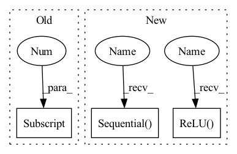

Pattern ID :1974
Before Change
self.p2_1 = nn.Conv2d(in_c, c2[0], kernel_size=1)
self.p2_2 = nn.Conv2d(c2[0], c2[1], kernel_size=3, padding=1)
// 线路3，1 x 1卷积层后接5 x 5卷积层
self.p3_1 = nn.Conv2d(in_c, c3[0] , kernel_size=1)
self.p3_2 = nn.Conv2d(c3[0], c3[1], kernel_size=5, padding=2)
// 线路4，3 x 3最大池化层后接1 x 1卷积层
self.p4_1 = nn.MaxPool2d(kernel_size=3, stride=1, padding=1)After Change
nn.ReLU(True),
nn.Conv2d(n5x5, n5x5, kernel_size=3, padding=1),
nn.BatchNorm2d(n5x5),
nn.ReLU( True) ,
)
// 3x3 pool -> 1x1 conv branch
self.b4 = nn.Sequential(
nn.MaxPool2d(3, stride=1, padding=1),
nn.Conv2d(in_planes, pool_planes, kernel_size=1),
nn.BatchNorm2d(pool_planes),
nn.ReLU(True),
)
def forward(self, x):
y1 = self.b1(x)
y2 = self.b2(x)In pattern: SUPERPATTERN
Frequency: 3
Non-data size: 3
Instances Fragment ID: 4767816
Project Name: datawhalechina/dive-into-cv-pytorch
Commit Name: d7e5c8335c2babf3ca45d2327bc74c2194b0dc59
Time: 2020-05-21
Author: qiangzibro@gmail.com
File Name: beginner/chapter02_image_classification_introduction/2.2_introduction_of_image_classification/2.2.2_classical_cnn_models/GoogLeNet/GoogLeNet.py
M Class Name: Inception
N Class Name: Inception
M Method Name: __init__(8)
N Method Name: __init__(6)
M Parent Class: nn.Module
N Parent Class: nn.Module
M File Name: beginner/chapter02_image_classification_introduction/2.2_introduction_of_image_classification/2.2.2_classical_cnn_models/GoogLeNet/GoogLeNet.py
N File Name: beginner/chapter02_image_classification_introduction/2.2_introduction_of_image_classification/2.2.2_classical_cnn_models/GoogLeNet/GoogLeNet.py
M Start Line: 35
M End Line: 44
N Start Line: 17
N End Line: 56
Fragment ID: 4767818
Project Name: datawhalechina/dive-into-cv-pytorch
Commit Name: d7e5c8335c2babf3ca45d2327bc74c2194b0dc59
Time: 2020-05-21
Author: qiangzibro@gmail.com
File Name: beginner/chapter02_image_classification_introduction/2.2_introduction_of_image_classification/2.2.2_classical_cnn_models/GoogLeNet/GoogLeNet.py
M Class Name: Inception
N Class Name: Inception
M Method Name: __init__(8)
N Method Name: __init__(6)
M Parent Class: nn.Module
N Parent Class: nn.Module
M File Name: beginner/chapter02_image_classification_introduction/2.2_introduction_of_image_classification/2.2.2_classical_cnn_models/GoogLeNet/GoogLeNet.py
N File Name: beginner/chapter02_image_classification_introduction/2.2_introduction_of_image_classification/2.2.2_classical_cnn_models/GoogLeNet/GoogLeNet.py
M Start Line: 35
M End Line: 44
N Start Line: 17
N End Line: 56
Fragment ID: 4767822
Project Name: youtalk/iknet
Commit Name: 492ac3f9080782b43c9961a321689afeed47805c
Time: 2021-05-03
Author: yutaka.kondo@youtalk.jp
File Name: iknet.py
M Class Name: IKNet
N Class Name: IKNet
M Method Name: __init__(2)
N Method Name: __init__(2)
M Parent Class: nn.Module
N Parent Class: nn.Module
M File Name: iknet.py
N File Name: iknet.py
M Start Line: 33
M End Line: 46
N Start Line: 33
N End Line: 49